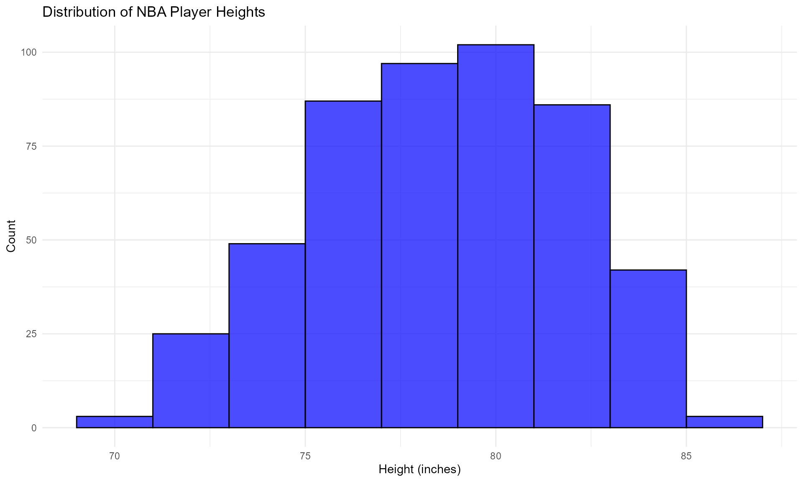
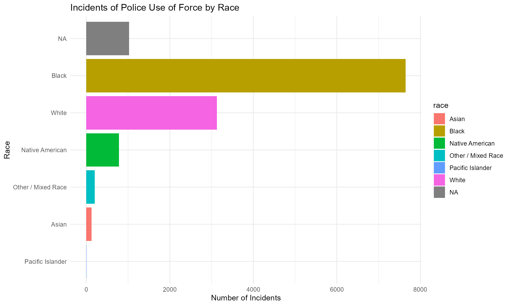

usdatasets: A Comprehensive Collection of U.S. Datasets
Source:vignettes/usdatasets-introduction.Rmd
usdatasets-introduction.RmdIntroduction
The usdatasets package provides a comprehensive
collection of U.S. datasets, encompassing various fields such as crime,
economics, education, finance, energy, healthcare, and more.
This package serves as a valuable resource for researchers and analysts
seeking to perform in-depth analyses and derive insights from
U.S.-specific data.
Dataset Suffixes
To facilitate the identification of data types, a suffix is added to the end of the name of each dataset. These suffixes indicate the format and type of the datasets, such as:
-
tbl_df: A tibble data frame -
df: A standard data frame -
ts: A time series object -
matrix: A matrix object -
character: A character vector -
numeric: A numeric vector -
factor: A factor variable
Example Datasets
Here are some examples of datasets included in the
usdatasets package:
marathon_tbl_df: A tibble containing marathon race data, including runner statistics and performance metrics.
mn_police_use_of_force_df: A data frame documenting incidents of police use of force in Minnesota.
nba_players_19_tbl_df: A tibble that includes data on NBA players for the 2019 season.
ncbirths_tbl_df: A tibble summarizing birth statistics across various demographics.
nyc_marathon_tbl_df: A tibble containing results and statistics from the New York City Marathon.
nycvehiclethefts_tbl_df: A data frame documenting vehicle theft incidents in New York City.
Visualizing Data with ggplot2
To illustrate the data, we can use the ggplot2 package
to create some visualizations. Here are a few examples:
1. Visualization of Marathon Finish Times
# Example: Visualizing finish times of the NYC Marathon
# Ajustado para las columnas disponibles en 'marathon_tbl_df'
marathon_tbl_df %>%
ggplot(aes(x = year, y = time, color = gender)) +
geom_point(alpha = 0.6) +
labs(title = "Marathon Finish Times by Year and Gender",
x = "Year",
y = "Finish Time (minutes)",
color = "Gender") +
theme_minimal()
2. Visualization of NBA Player Heights
# Example: Visualizing the distribution of NBA player heights
nba_players_19_tbl_df %>%
ggplot(aes(x = height)) +
geom_histogram(binwidth = 2, alpha = 0.7, fill = "blue", color = "black") +
labs(title = "Distribution of NBA Player Heights",
x = "Height (inches)",
y = "Count") +
theme_minimal()
3. Visualization of Police Use of Force Incidents
# Example: Visualizing police use of force incidents by race
mn_police_use_of_force_df %>%
group_by(race) %>%
summarize(count = n()) %>%
ggplot(aes(x = reorder(race, count), y = count, fill = race)) +
geom_bar(stat = "identity") +
labs(title = "Incidents of Police Use of Force by Race",
x = "Race",
y = "Number of Incidents") +
theme_minimal() +
coord_flip()
Conclusion
The usdatasets package is an invaluable tool for those
looking to analyze and derive insights from a variety of U.S.-specific
datasets. The suffixes used in the dataset names help users quickly
identify the type of data they are working with, facilitating a smoother
analysis process.
For more information and to explore the datasets, please refer to the package documentation.